통신·제어·비전·센서를 통합하고, 시뮬레이션으로 검증하는 엔지니어
옥윤정.
Yunjeong Ok — Robotics Engineer
목차
Index01 — Profile
프로필
시뮬레이션과 실제 로봇 환경을 오가며 동작을 검증하는 시스템 통합·테스트 엔지니어를 지향합니다. 통신(ROS 2 인터페이스)·제어·비전·센서를 폭넓게 다루며, 여러 서브시스템을 하나의 동작으로 묶어내는 데 강점이 있습니다.
Skills
-
Middleware
ROS 2 · Nav2
-
Simulation
Gazebo · NVIDIA Isaac Sim
-
Vision
OpenCV · YOLO
-
Language
Python
Certs
- ISTQB Foundation Level (CTFL)
- ADsP
- TOEIC Speaking — Advanced Low
- 컴퓨터활용능력 2급
Platforms
- Doosan Robotics M0609
- TurtleBot4
- DJI Tello
- ROBOTIS Dynamixel
Doosan Bootcamp · 2025.12.08–2026.06.12
ROBOT · 두산 부트캠프
Doosan Bootcamp · 두산 P1
Doob-E · 음성·비전 기반 공구 정리 시스템
두산 P1 — Doob-E · Tool Sorting
음성·비전·웹·ROS 2를 연결한 공구 정리 로봇 시스템

주제
두산 M0609, RealSense, YOLO, Wake word/STT/LLM, 웹 관제, ROS 2 노드를 연결해 사용자의 자연어 명령을 실제 pick/place 또는 sort 동작으로 실행하는 정비소 공구 정리 시스템.
통합 흐름
- Wake word → 5초 녹음 → STT → LLM command JSON 생성
- YOLO 감지 결과와 색상·형상·종류·제외 조건을 매칭해 target 선택
- pick 의도일 때만
/robot/target_candidatepublish - sort 명령은 현재 vision 결과와 함께
/robot/sort_task로 분리 실행
기술
My role
- 음성 명령을 command JSON으로 변환하는 STT/LLM 파이프라인 연동
- vision 결과와 명령 조건을 매칭해 target/sort ROS 2 topic으로 전달하는 통합 흐름 구현
- real 코드 구조를 유지한 Gazebo 검증 경로 분리 및 실행 문서화
- Web UI 안전 제어 기능 추가 — emergency stop, wake-word toggle 등
두산 P1 — Sim vs Real 비교
Sim / Real 병렬 검증 화면
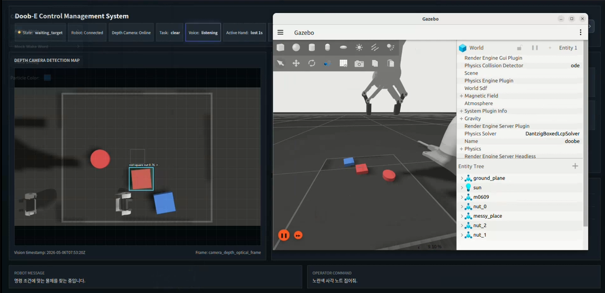
SIM Gazebo Harmonic 시뮬레이션 환경
REAL
실제 로봇 동작 + YOLO 감지 화면
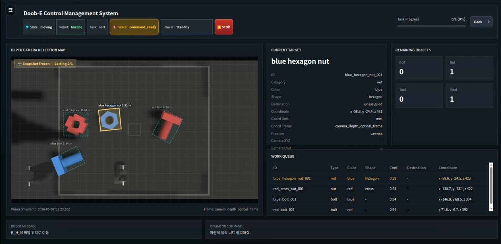
Doob-E CMS — Gazebo 모드 관제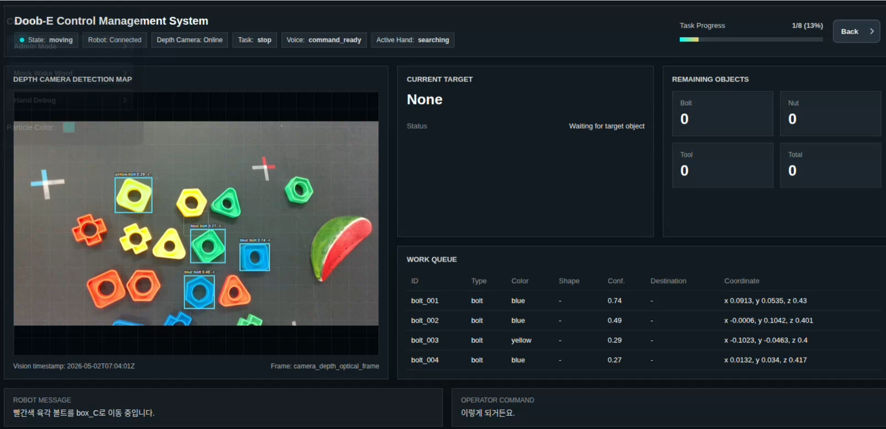
실제 관제 화면 — Doob-E Control Management System두산 P1 — Sim & Real Architecture
음성·비전·로봇 실행 아키텍처 — Sim / Real 공통 흐름
/sort_task
sim_gripper IK · attach/detach 치환
Doosan SDK TCP/Joint 명령 전달
RealSense RGB-D → vision feedback
상위 판단 로직은 공통, 실행 백엔드만 교체
dry-run / approach / real pick 단계로 실행 범위 확장
음성·비전·웹·ROS 2·실물 로봇을 같은 인터페이스로 연결
두산 P1 — 명령 해석 · 실행 안전 검증
Troubleshooting & 배운 점
Case 1 — 자연어 명령을 바로 로봇 동작으로 보내는 위험
리스크
- "빨간 너트"처럼 대상만 말해도 로봇이 움직이면 안전 위험
- 색상·모양·종류·exclude 조건이 vision 결과와 어긋나면 잘못된 물체를 집을 수 있음
판단
음성 인식 결과를 곧바로 모션 명령으로 취급하지 않고, 명령 의도와 vision target이 모두 확정될 때만 실행하도록 분리해야 했다.
Case 2 — 실물 로봇 점유 제한과 실행 리스크
리스크
- 실물 M0609 사용 시간이 제한되어 전체 기능을 매번 로봇에서 검증하기 어려움
- 좌표 변환·pick 높이·sort 목적지 오류가 바로 하드웨어 충돌로 이어질 수 있음
판단
실행 가능 여부를 한 번에 판단하지 않고, 로그·접근 위치·실제 pick을 단계적으로 열어야 했다.
Doosan Bootcamp · 두산 P2 · Isaac Sim 5.1
양식장 청소 멀티로봇
두산 P2 — AquaSweep · Isaac Sim 5.1
Isaac Sim + ROS 2 멀티로봇 통합 시뮬레이션
 Isaac Sim · 수조 7개 · 철갑상어 + Hippo
Isaac Sim · 수조 7개 · 철갑상어 + Hippo
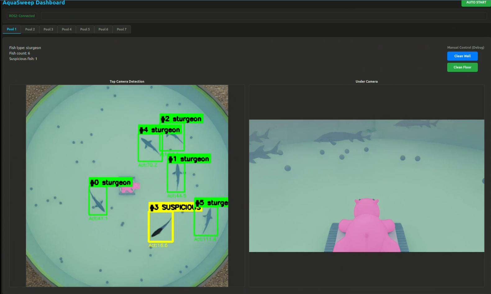
aqua_dashboard · YOLO OBB 탐지 + Hippo 수중뷰주제
NVIDIA Isaac Sim 5.1 위에 철갑상어 양식장(수조 7개, 40×30 m)을 재현하고, custom msg/srv/action으로 ROS 2 인지·계획·제어 노드와 Isaac Sim 내부 실행 루프를 연결한 멀티로봇 통합 시뮬레이션.
로봇 3종
Hippo ×7
BCD 부력 제어 수중 주행 · 아르키메데스 나선 경로 · 이물질 흡입
M1013 코봇 ×7
원형 레일 6축 코봇 · 레일+관절 동시 구동 · 지그재그 벽면 청소
갠트리 ×1
천장 XYZ 크레인 · 흡착 패드 · 폐어 수거함 이송
기술
My role
- 팀장 — 5인 팀 리딩 · 커뮤니케이션 기준 정립
- Isaac Sim 익스텐션 구현 — 양식장 환경·물리·카메라·로봇 모션
- PoolStatus, MotionStatus, StartMotion, CleanFloor/CleanWall 등 ROS 2 인터페이스 정의
- Detection → Planner → Controller → Isaac Sim 실행·피드백 흐름 통합
두산 P2 — AquaSweep 로봇 3종
Isaac Sim에서 검증한 로봇별 실행 역할
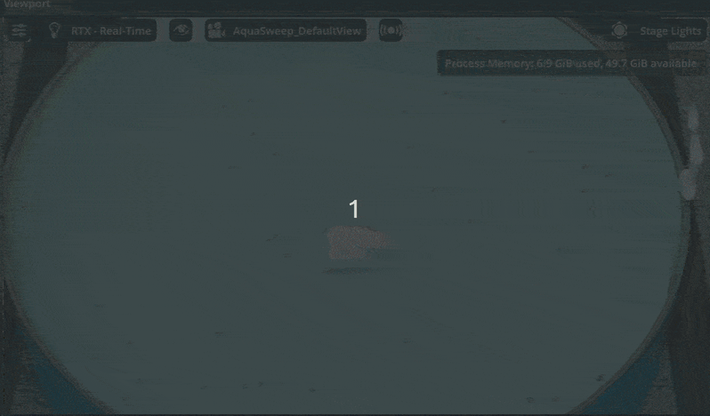
수조 바닥에서 나선 경로로 주행하며 이물질을 흡입하는 장면Hippo ×7 · Floor cleaning
수중 바닥 청소 로봇
수조마다 1대씩 배치해 바닥 이물질을 청소한다. Isaac Sim 내부 SpiralPlanner가 아르키메데스 나선 경로를 생성하고, 로봇은 부력/항력 조건 속에서 주행한다.
연동 인터페이스
CleanFloor action → start_clean_floor service → MotionStatus progress
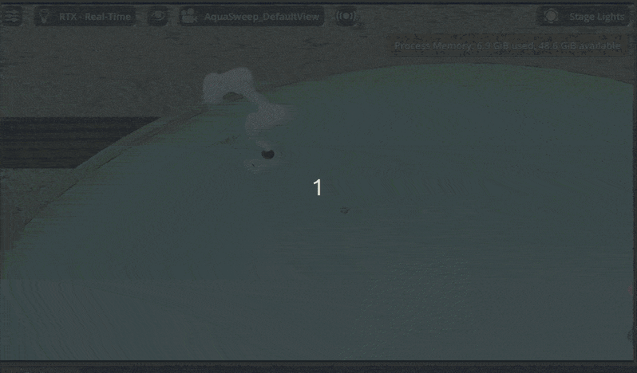
원형 레일 위 M1013이 수조 벽면을 청소하는 자세 캡처M1013 ×7 · Wall cleaning
레일 기반 벽면 청소 코봇
수조 외벽 원형 레일에 M1013을 배치해 벽면 청소를 담당시켰다. 레일 이동과 6축 팔 동작을 함께 사용해 지그재그 패턴으로 벽면을 훑는다.
연동 인터페이스
CleanWall action → start_clean_wall service → wall status feedback
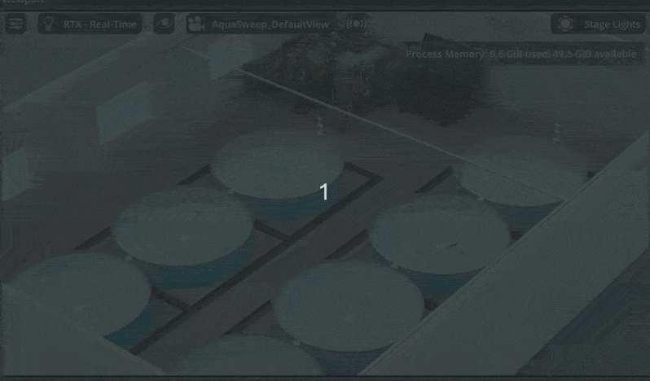
죽은 개체 수조로 이동 → Z축 하강 → 폐어함 이송 장면Gantry ×1 · Dead-fish collection
폐어 수거 프로토타입
죽은 철갑상어가 감지된 수조 위치로 이동한 뒤 Z축으로 하강하고, 인력 기반으로 개체를 부착해 폐어함으로 이송한다. 정밀 grasping보다 탐지 결과에서 수거 동작까지 이어지는 시나리오 검증에 초점을 두었다.
연동 인터페이스
MoveFish 확장 구조 · dead/suspicious fish detection · 수조 위치 기반 gantry motion
두산 P2 — AquaSweep 시스템 통합
Planner → Controller → Isaac Sim 실행 구조
Perception
aqua_detection
Top/Under camera 구독
YOLO OBB + OpenCV/pool_N/status 발행
Planning
aqua_planner
fish_count == 0 판단
수조별 작업 선정
CleanWall → CleanFloor 오케스트레이션
Control
aqua_controller
수조별 Action Server
Isaac service 호출
MotionStatus 모니터링
Custom interfaces
PoolStatus · MotionStatus · StartMotion · CleanFloor · CleanWall
Isaac Sim extensions
aquasweep_ext · water_tank_env_ext · underwater_robot_ext · rail_robot_ext · gantry_robot_ext · top/under_cam_ext
ROS 2 ↔ Isaac 실행 분리
ROS 2 노드에서 직접 cmd_vel을 계산하면 Isaac Sim physics_dt와 지연/누락 문제가 생기므로, 실행 주체를 Isaac 내부로 옮겼다.
연결 방식
Planner는 Action goal만 보내고, Controller는 /{pool}/isaac/start_* service로 Isaac Sim 모션을 시작한다.
검증 방법
Action 단독 호출, Mock PoolStatus, Dashboard start까지 단계별로 나눠 통합 지점을 확인했다.
Doosan Bootcamp · 두산 P3
협동로봇 빙수 제조 · Bingsu Cobot
두산 P3 — Bingsu Cobot
협동로봇을 이용한 빙수 제조로봇
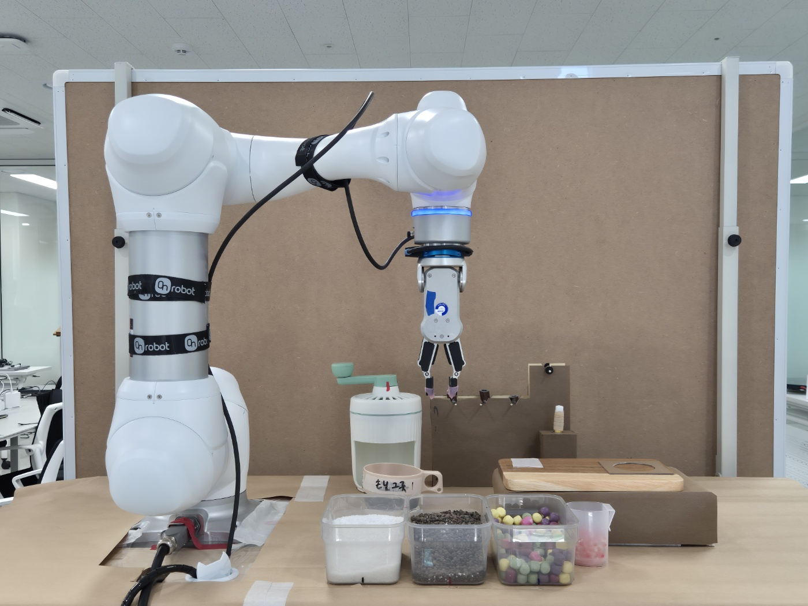
주제
두산 로보틱스 M0609 협동로봇으로 주문부터 토핑, 닉네임 부착까지 컵빙수 제조 전 과정을 자동화했다.
기능
- 제빙 → 팥/연유 토핑 → 픽업대 적재 순으로 전 과정 자동화
- 주문자 닉네임을 스티커에 써서 컵에 부착
- 키오스크 주문 내용과 제조 진행 상태를 실시간으로 동기화
- 제조 중 외력 감지 시 즉시 일시정지
- 관리자 web / 고객 web 분리 구현
기술
My role
- 단위 기능 간 ROS 2 인터페이스 설계
- 전체 기능 통합 및 web 연동 설계
- 글씨쓰기 알고리즘 구현
두산 P3 — 로봇 동작 실행 구조
전체 시퀀스 구조 설계
BINGSU PROCESS — 5 PHASES · 24 TASKS
01
제빙기 동작
02
팥·연유 올리기
03
토핑 올리기
04
닉네임 쓰기
05
서빙
빙수 제조 시퀀스는 위 5가지 페이즈로 크게 나뉘지만, 세부 task는 24개로 구성되어 있고 각 task별 공정 순서를 관리자 web에서 제어할 수 있도록 구현했다. 관리자 web에서 실행 가능한 기능은 특정 task로 이동, 정지, 외력 감지 시 safety mode 해제 세 가지다.
따라서 시스템 통합을 진행하며, 모든 task 실행을 아래와 같은 공통 래퍼로 감싸 매 task마다 동일한 점검을 거치도록 설계했다.
Task N
motion step
공통 래퍼 — _exec_step() / _exec_gripper()
Task N+1
motion step
② 외력 감지 → SAFE_STOP
관리자 web에서 safety mode 해제 후 재개
③ 체크포인트 → Firebase 저장
재개 시 정지된 task부터 재실행
두산 P3 — Handwriting Routine
닉네임 쓰기 — 글씨쓰기 알고리즘
Handwriting Algorithm — Flow
Hershey 필기체 폰트 — 글자 = 획(stroke) 목록
strokes = [ [(x0,y0),(x1,y1),...], ... ]
bounding box 중심 정렬 → 40mm 안으로 스케일
scale = 40.0 / max(width, height)
rx = CENTER_X − dy · scale
ry = CENTER_Y − dx · scale
로봇 베이스 좌표축과 종이 배치 방향이 90도 어긋나 있어 좌표를 교차 매핑
n = dist / 1mm · blend_radius=3mm → 곡선 부드럽게
Z 강성 300 N/m (유연) · XY 3000 N/m (고정) · 목표힘 −20N
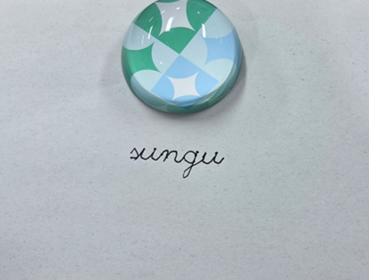
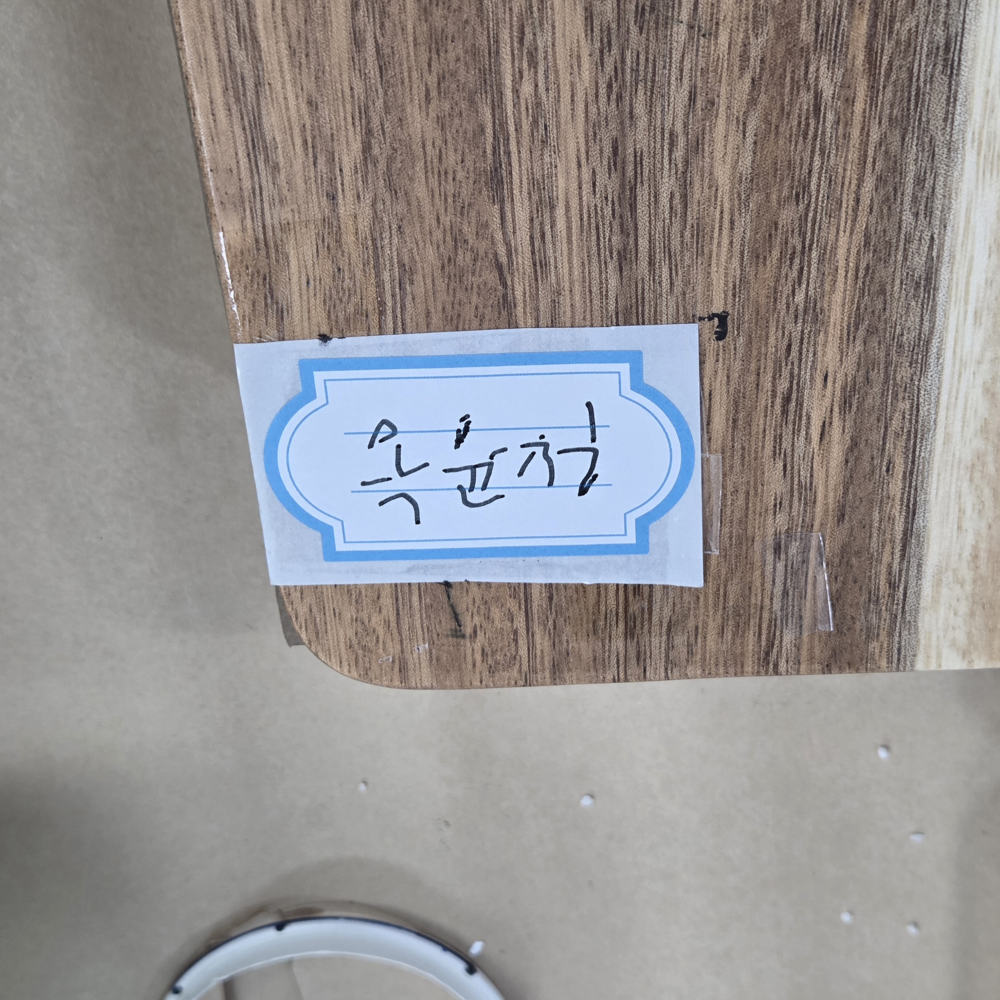

두산 P3 — ROS 2 통합 & 하드웨어 설계
Troubleshooting & 배운 점
Case 1 — ROS 2 인터페이스 미정의 · 후반 통합 병목
기존 패키지 단위로 파일을 나누고 ROS 통신으로 시스템 통합을 진행하려 했다. 하지만 통합 전에 인터페이스를 따로 정하지 않고 각 패키지를 단위 단위로 개발 완료한 뒤 통합을 시도하다 보니, 막상 인터페이스만 추가해서 데이터를 주고받으려 하자 전체 코드를 수정해야 하는 상황이 되었고, 결국 일정상 하드코딩 방식으로 통합을 진행하게 되었다.
Problem
인터페이스 사전 정의 없이 패키지별 독립 개발 후 통합
Action
인터페이스 추가만으로 해결 시도 → 전체 코드 수정 필요 → 하드코딩 통합
배운 점
통합 전 인터페이스·통신 규약을 먼저 정의해야 함
Case 2 — 펜 홀더 휘어짐 · 물리적 설계 문제
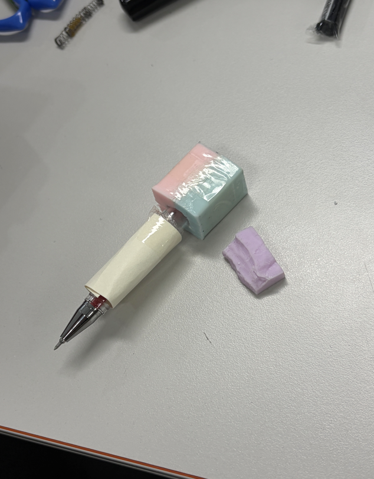
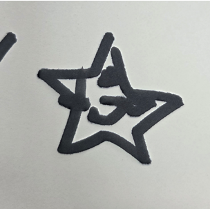
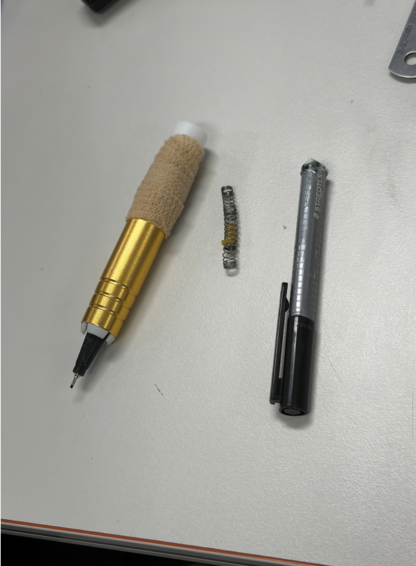
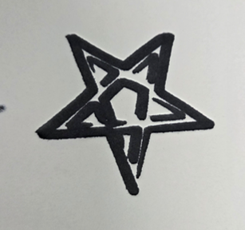
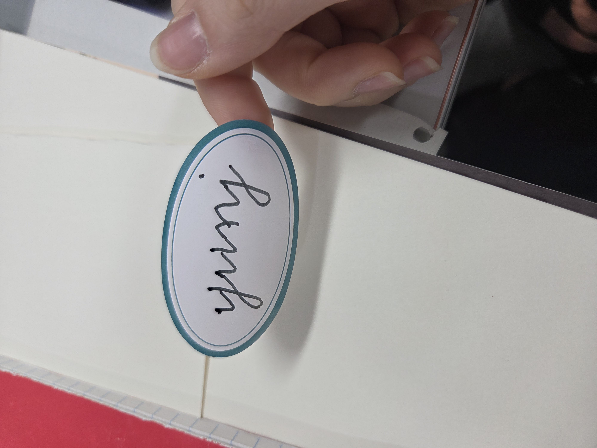
Problem
펜이 앞뒤로 휘어져 글씨 획이 틀어짐
Action
분필 홀더와 테이프로 파지/완충 구조 개선
Result
소프트웨어가 아닌 물리 설계 원인 분리
Doosan Bootcamp · 두산 P4 · TurtleBot4
간호사 보조 의료로봇
두산 P4 — MediCart · TurtleBot4
간호사 보조 의료로봇 시스템

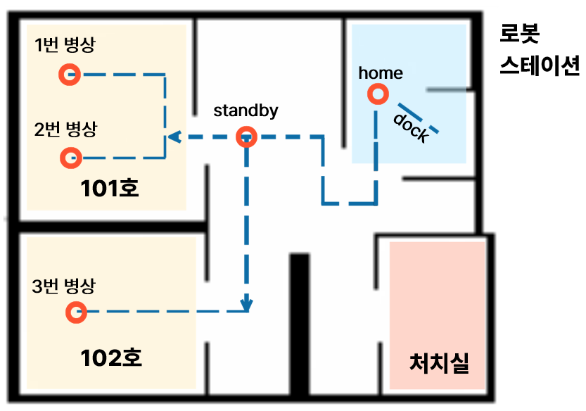
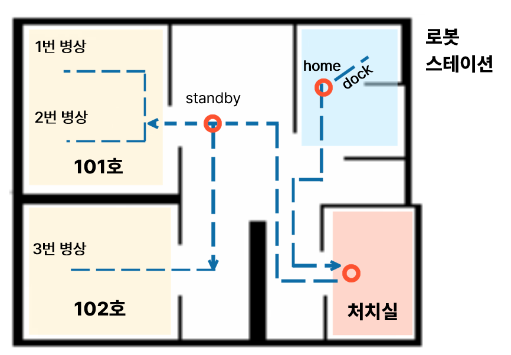
주제
TurtleBot4 기반 병원 순회 보조 로봇으로, 자율 회진(Mode A)에서 병실을 돌며 환자 재실·신원을 확인하고, 간호사 투약 보조(Mode B)에서 약품 라벨을 OCR로 검증하는 이중 미션을 수행한다.
운영 모드 2종
Mode A · 자율 회진
병실 Nav2 순회 → YOLO+QR 환자 확인 → 웹 문진표 작성 → Firebase 업데이트
Mode B · 투약 보조
간호사 추종(OAK-D ReID) → STANDBY → 약품 라벨 OCR 검증 (GCP Vision API)
기술
My role
- Mode A 회진 통합 — mission_manager patrol 상태머신 전체 구현
- Nav2 병실 순회 로직 · patient_identifier 연동 · Firebase 상태 기록
- 웹 문진 완료 대기(INTERVIEW) ↔ 상태머신 전환 인터페이스 설계
- Mode B 투약 보조 (간호사 추종 · OCR 검증) — 팀원 담당
두산 P4 — MediCart · System Architecture
Mode A 회진 상태머신 · 시스템 아키텍처
Placeholder
Architecture diagram to be added
Nav2 patrol, mission_manager state machine, patient_identifier, web questionnaire, Firebase, and dashboard/service interface flow.
State Machine
ROOM_MOVE → PATIENT_CHECK → INTERVIEW → NEXT_ROOM flow placeholder.
ROS 2 / Web Interface
Service/topic names, Firebase state updates, and dashboard trigger points placeholder.
My Role Detail
Mode A integration responsibilities and implementation notes placeholder.
두산 P4 — MediCart 회진 통합
Troubleshooting & 배운 점
Case 1 — Nav2 초기 위치 미설정 — 회진 시작 후 로봇 이동 불가
문제 상황
/robot6/start_patrol호출 후 Undock만 하고 병실로 이동 안 됨- AMCL이 자기 위치 미인식 상태 — Nav2 planner 실패
대응
- RViz
2D Pose Estimate로 초기 위치 설정 필수화 - 대시보드에 위치 미설정 시 patrol 버튼 비활성화 가드 추가
결과 · 배운 점
- 초기 위치 설정 후 병실 순회 정상 동작
- Nav2 운용 시 localization 선행이 필수 전제조건임을 확인
Case 2 — 회진 상태머신 INTERVIEW 스텍 — 웹 문진 완료 신호 누락
문제 상황
- 환자 확인 후 INTERVIEW에서 다음 병실로 전환 안 되고 무한 대기
- 웹 문진앱이 Firebase에 직접 저장하지만 ROS2 상태머신이 완료 이벤트를 수신 못 함
대응
- dashboard에
/robot6/intake_done서비스 추가 — 웹 제출 시 호출 - mission_manager가 수신 시 INTERVIEW → NEXT_ROOM 전환
결과 · 배운 점
- 회진 루프 end-to-end 정상 동작 확인
- ROS2 상태머신과 웹앱 간 명시적 완료 신호 설계의 중요성 체득
Case 3 — INTEL_AUTH_TOKEN 불일치 — 로그인 후 /login 루프
문제 상황
- 로그인 성공 후에도
/login으로 계속 리다이렉트 - Flask 백엔드 · Next.js 프론트의
INTEL_AUTH_TOKEN.env 값 불일치
대응
- 두 .env 파일의 토큰 값 동기화 후 팀 공유 .env 템플릿 작성
- README에 토큰 동기화 필수 절차 명시
결과 · 배운 점
- 로그인 루프 즉시 해소
- 멀티 서비스 환경에서 공유 시크릿 관리 체계 수립의 중요성 인지
University Projects · RL & Control
ROBOT · 교내 프로젝트
교내 P1 — DRL Study · PyBullet · 2024.03–12
DRL 이론 분석 · 코드 분해 · 시뮬 검증 스터디

주제
DRL 이론 학습 스터디로 DTaglietti/Pick-and-Place-with-RL reference code를 분석하며 PyBullet 기반 DQN Pick & Place 파이프라인을 이해했다.
학습 설계
관찰
37×37 바이너리 이미지 · CNN Policy
보상
pick 성공 +1 · 실패 −2
알고리즘
DQN · TD3 이론 학습
Pipeline · 구현 포인트
- Camera→World 좌표 변환 — 내부 파라미터·R·T 계산, 큐브 위치 고정 후 해결
- Depth 정규화 — 0~255 값을
depth / 255.0 × far로 실제 거리 복원
기술
배운 점
My role
Reference Code 아키텍처 분석 · camera→world 좌표 변환 · depth 정규화 구현
배운 점
레퍼런스 코드를 분해하며 관찰값, 보상, 좌표 변환이 학습 파이프라인에 어떻게 연결되는지 이해했다.
교내 P2 — RCS 동계 스터디 · KAU · 2023.12–2024.02
3축 Planar 로봇팔 — 이론부터 원 그리기까지
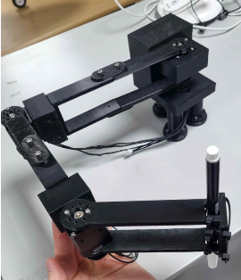
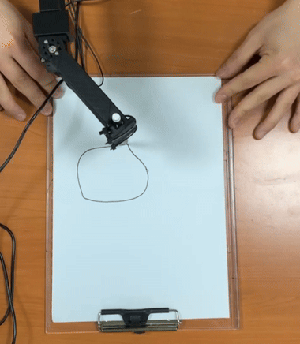
주제
한국항공대학교 RCS 동계 스터디 — 2링크·3링크 planar 로봇팔의 기구학 이론을 학습하고, MATLAB 시뮬레이션 → Arduino 실제 구현으로 원 궤적을 그리는 end-to-end 프로젝트.
3단계 구성
기술
핵심 학습
DH parameter로 로봇 모델링 → 역기구학(기하·수치)으로 원 경로 계산 → Dynamixel SDK로 각 관절에 목표 위치를 명령하고 현재 위치·속도·토크를 피드백받아 실물 궤적 추종 검증
배운 점
Singularity 문제
제작 기간의 한계로 3축 robot arm이 최선 — 목표는 원이었으나 singularity 영역에서 레몬 형태로 찌그러짐. 좌표·각도 다변화 및 특이점 회피 시도에도 모터 한계 + 관절 충돌 등 복합 원인 존재.
배운 점
알고리즘을 짜거나 시스템을 설계할 때, 기계 자체의 물리적 한계를 전제로 두어야 한다. 소프트웨어만으로 해결할 수 없는 영역이 반드시 존재한다.
Capstone · 졸업작품
VISION
카메라 비전 정보만으로 Landing Marker를 인식하고 드론을 안전하게 착륙시키는 자율착륙 시스템 — AirSim 시뮬레이션과 DJI Tello 실물 검증.
VISION — 졸업작품 · 종합설계2 · 2024년 1학기
Vision-Based Autonomous Landing

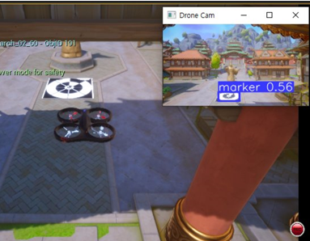
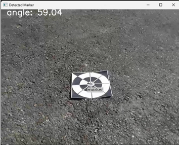
주제
모든 센서 고장을 가정하고, 카메라 정면 비전 정보만으로 Landing Marker를 인식해 드론을 안전하게 자율 착륙시키는 시스템. AirSim 시뮬레이션 검증 후 DJI Tello 실물 적용.
Landing Pipeline
My role
- Landing Algorithm 설계
- Camera Calibration
- Distance 계산 구현
- AirSim 시뮬레이션 환경 구축
결과
11.5 cm
Simulation 오차
13.3 cm
Real World 오차
※ Tello 기체 폭 98 mm 기준 · 목표 오차 15 cm 이내 달성 · Sim → Real 전환 오차 +1.8 cm
배운 점
AirSim에서 검증한 착륙 흐름을 실물 DJI Tello로 옮기려면, 마커 크기·카메라 파라미터·기체 치수 차이를 캘리브레이션으로 보정해야 한다는 점을 배웠다.
기술
Appendix · 항공 · 우주 하드웨어
APPENDIX · EMBEDDED
Appendix — Embedded · 항공 · 우주 하드웨어
EMBEDDED 빌드

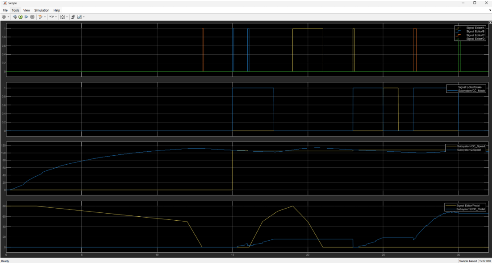
Cruise Control
MATLAB SIMULINK를 이용한 크루즈 컨트롤 시스템 설계 및 시뮬레이션. 차량 속도 제어 요구사항 정의 → 제어기 설계 → 다양한 시나리오 결과 검증.
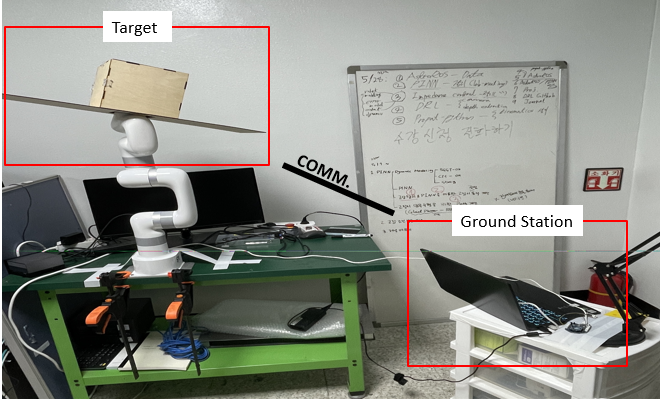

Satellite Mockup
우주쓰레기 포집 실험용 실제 위성 목업. 직접 설계 → 3mm 합판 레이저 커팅 조립. Lite 6 XArm 로봇과 연동해 포집 시나리오 검증.
Thank you.
ROS 2 인터페이스 정의부터 mock data 기반 통합 테스트, sim/real 환경 분리까지 — 개별 기능이 아니라 시스템 전체가 맞물려 동작하도록 설계하고, 통합 단계에서 무너지지 않는 로봇을 만드는 로봇 테스트 · 시스템 통합 엔지니어가 되겠습니다.